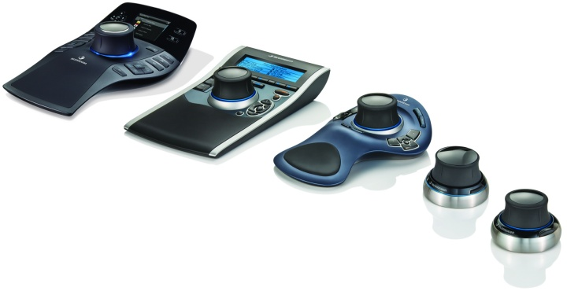

|
3Dconnexion bir Logitech þirketidir (SIX: LOGN) (Nasdaq: LOGI), ve tasarým ile görsel efekt uzmanlarý için lider 3 boyutlu fare üreticisi konumundadýr. Günümüzün en popüler ve en güçlü 3 boyutlu yazýlýmlarý tarafýndan desteklenir. 3Dconnexion 3D fareleri, 3 boyutlu uygulamalarda daha sezgisel ve doðal bir çalýþma imkaný sunar.
3Dconnexion 2D ve 3D tasarým profesyonelleri için mükemmel bir 3 boyutlu tasarým deneyimi sunmakta uzmandýr. Ýnsanlarýn daha iyi, hýzlý ve rahat tasarýmlar yapabilmeleri bizim hedefimizdir. Dijital prototipleme DNA'mýzda iþli. Uzay teknolojilerinden otomotive, tüketim mallarýndan elektroniðe, makine elemanlarýndan oyun geliþtirmeye, 3Dconnexion 3D mouse'lar üretkenliði ve tasarým kalitesini yeni bir seviyeye yükseltir.
3Dconnexion merkezi Fremont California'da, Avrupa merkezi Seefeld, Almanya'da bulunurken, dünya çapýnda ise bir çok 3Dconnexion ofisi mevcuttur.
3D Fare Nedir?
3D uygulamalarla çalýþma þeklinizi deðiþtirin. Modeli elinizde tutar gibi ya da helikopter uçuþu þeklinde kaydýrýn, yakýnlasýn, döndürün. Bu klasik fare ya da klavye ile asla ulaþamayacaðýnýz bir kontrol seviyesidir.

Büyük resim için týklayýnýz
Çift Elin Gücü
3D fare kullanýcýlarý dengeli ve akýcý bir çalýþmaya kavuþurlar. Bir el 3D fare ile navigasyon iþlemlerini yürütürken diðer eliniz klasik fare ile seçme, yaratma ve düzenlemeyle ilgilenir. Bu, çok daha az týklama ve daha hýzlý sonuç getiren çift elle çalýþma yöntemidir.
Sanal Uzantýnýz
Her 3Dconnexion 3D farenin kalbi, kontrol baþlýðýdýr. Eþ zamanlý olarak modeli döndürmek, kaydýrmak, modele yakýnlaþmak için hafifçe itin, çekin, çevirin ya da eðin. Daha hýzlý hareket etmek için daha güçlü bastýrýn ya da karýþýk düzenlemeleri yapmak için daha yavaþ bastýrýn.
3Dconnexion 3D mouse - CONTROLLER CAP explanation
3D Farenin Yararlarý:
- %20'den fazla üretkenlik artýþý*1: 3D fare ile modelinizi þekillendirirken, ayný anda klasik fare ile seçip ve düzenleyip zamandan tasarruf edebilirsiniz.
- Geliþtirilmiþ Konfor: Ýþ yükünü her iki ele yayarak, klasik mouse týklamasýný %50'ye kadar düþürebilirsiniz*2.
- Tasarým Performansý*1: Eðer karmaþýk bir eskiz ya da 3D model üzerinde çalýþýyorsanýz,üstün navigasyon deneyimi, tasarým hatalarýný engellemede önemli rol alan, model inceleme seviyesini destekler ve iyileþtirir.
*1 Kaynak: 3D Farelerin Ekonomik Geri Ödemesi Çalýþmasý - Temmuz 2008
*2 Kaynak: 3D Bilgisayar Kullanýcýlarý Ýçin Fiziksel Rahatsýzlýk ve Acýyý Azaltma - VSI Risk Yönetimi ve Ergonomi ©2005
Ürün Gamý
SpacePilotPro
130'den fazla 3D programý desteklenir
SpacePilotTPRO tüm bu zorluklarý karþýlamak ve günümüz 3D yazýlým dünyasýnda çok çaba gerektiren yazýlýmlarda en iyisi olmak için geliþtirildi.
LCD Asistaný:
Renkli LCD ekran, e-mail'leri, anlýk görevleri, takvim kayýtlarýný ve fonksiyonel tuþ komutlarýný özet olarak görüntüler ve iþ akýþýnýzý aksatmadan önemli bilgilere hýzlý ulaþmanýzý saðlar.
Autopilot:
Akýllý Autopilot, uygulamayý ve geçerli durumu tanýr, 3D uygulamalarýyla daha hýzlý ve basitleþtirilmiþ bir etkileþim için kontrol tuþlarýný "anýnda" atar.
Güçlü Uygulama Kontrolleri:
5 adet yeni özelleþtirilebilir, çift iþlevli, Akýllý Fonksiyon Tuþlarý en çok kullanýlan 10 komuta hýzlý giriþ saðlar. SpacePilotTPRO kullanýlan uygulamayý ve çalýþma ortamýný tanýr, ve otomatik olarak uygun komutlarý atar. Renkli LCD ekranda, optimize edilmiþ bir iþ akýþý saðlamak için, fonksiyonel tuþlar görülebilir.
Mühendisler Ýçin Dizayn Mükemmelliði:
Günümüz CAD aðýrlýklý uygulamalarýnda pek çok zorluk bulunmakta. Daha geliþmiþ ürünler için talep, pazarlama için kýsýtlý zaman ve daha verimli geliþime odaklanmak, profesyonel CAD'de her þeyi geliþtirilmiþ performansa yönlendiriyor.
Üst Düzey Konfor:
Ýpeksi materyal ile kaplanmýþ Bilek-Konfor kýsmý, kompakt kontrol baþlýðý size kolay ve keskin bir kontrol için rehberlik ederken, elinizi mükemmel bir þekilde destekler. En çok kullanýlan fonksiyon tuþlarý uygun bir þekilde konumlandýrýlmýþtýr ve konforlu bir çalýþma deneyimi, hatta en uzun dizayn çalýþma sürelerini mümkün kýlar.
Üstün MCAD Navigasyon:
SpacePilotTPRO en geliþmiþ "6 Açýlý Özgürlük" (6DoF) sensör özelliðini barýndýrýr. 3D modellerinizi kolayca kaydýrmak, yakýnlaþtýrmak ya da döndürmek için, kompakt kontrol baþlýðýný hafifçe bastýrýn, çekin, çevirin ya da eðin. Bu size ekranýn içine girip, modeli elinizde tutuyormuþsunuz hissi verir. Ýkinci nesil QuickView Navigation tuþlarý 32 standart açý ile eþsiz bir kontrol, ayný zamanda geliþtirilmiþ hata algýlama ve yüksek dizayn kalitesi için modeli keþfetmeyi saðlar.
SpacePilotPro videosu için: www.flixfacts.co.uk/...3dconnexion-3dx-700026
Daha fazla bilgi için: www.3dconnexion.com/products/spacepilot-pro.html
|